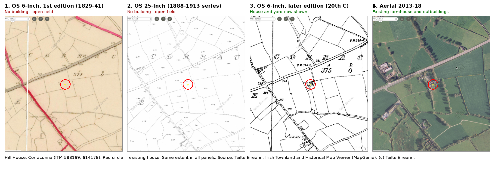

Hill House, Corracunna, Mitchelstown, Co. Cork (P67 D954).
Family land. Kevin's parents own the land and house and will give landowner consent. Kevin O'Brien and Felicity Peart are the applicants. It will be their family home.
About 200 m down a private gated lane. Heavily screened by trees, not visible from any public road or from Scenic Route S1.
Designations (Cork CDP 2022-2028)
Mitchelstown Greenbelt GB 1-1High Value LandscapeBlackwater SAC catchment
Not a Protected StructureNot in an ACANot on the NIAH
Existing house
Two-storey rendered vernacular farmhouse, roughly 118 m².
Hipped slate roof, with a later flat-roofed sunroom on the south side.
Habitable and currently lived in (informally let).
It may not have proper foundations, but nothing has been tested.
Measured survey
Jim Canning (Consulting Engineer, Cork), March 2026. A dimensioned survey of the house and outbuildings, not a structural or condition report.
The drawing includes ground- and first-floor plans, a roof plan, elevations and sections.
The red (ground floor) and yellow (roof) outlines on the map are traced from that drawing. They were placed by eye against the 2021 drone image, so treat their position as about ±1-2 m. The .dwg itself (sent separately) has the true dimensions.
Site photos
Turn on the drone photos in the Layers panel (top right of the map), then click any dot to see the photo taken from that spot. 2026 drone and 2021 drone. Hover over or open a photo to see which way the camera was pointing.
How old is the house?
The Ordnance Survey maps suggest it was built c.1900-1930.
OS 6-inch, 1st edition (1829-41): the site is an open field.
OS 25-inch (1888-1913): still no house.
OS 6-inch, later edition (20th C): the house appears for the first time.
This matters for planning. Because it's a later building, its heritage significance is likely to be modest, although it is still a vernacular building under the Development Plan.

Overlay a historic map on the live map (or use the Layers panel on the map):
Overlay opacity
The historic maps are screen captures georeferenced by hand, so expect a few metres of drift.
The big question
Demolish and replace, or retain and extend?
The house counts as vernacular, so the CDP sets a presumption against demolition (§16.3.20-22, HE 16-19). Demolition would need a conservation appraisal by an accredited consultant, plus a structural report.
Replacing a habitable dwelling (RP 5-29) means the usual rural-housing need test and occupancy clause shouldn't apply.
The greenbelt (RP 5-19/5-20) and High Value Landscape (GI 14-9/14-10) rules call for a higher design standard.
Wastewater will need an on-site treatment system (RP 5-23), and the Blackwater SAC makes this a sensitive catchment.
Planning history nearby
Cork Co. Co. 19/5319, ABP PL04.305131: Sinéad O'Brien and Emmet Campion, Corracunna. A new dwelling, detached garage and wastewater treatment system.
The council granted permission, but Transport Infrastructure Ireland (TII) appealed to An Bord Pleanála as a third party. The application was then withdrawn (s.140) on 4 Sep 2019, before ABP made a decision. Case page
This shows TII takes an interest in new development here, so access and traffic will need care.
We'd value your honest view on both routes: what each would mean for cost, structure and planning risk. That includes whether keeping part of the original house is realistic.